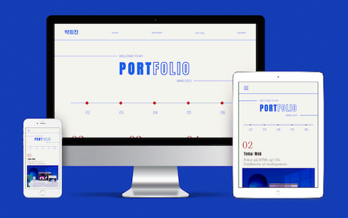

Tema 06
Portfolio
01. Hovedtemaer

- Viden
- Færdigheder
- Kompetencer
02. Formål

×
Målet med mit portfolio-website er at præsentere mine færdigheder,
viden og kompetencer, som jeg har tilegnet mig i løbet af første semester. Mit primære formål er at
udvikle og færdiggøre dette portfolio-website inden deadline. Efter
fuldførelsen vil jeg levere en præsentation af websitet.
03. Proces

Formål og målgruppe : Mit portfolio-site er designet specifikt til MMD-udervisere med henblik på at fremvise mine tidligere opgaver og demonstrere mine færdigheder og kompetencer. Struktureret med sektioner pr. opgave og udvalgte visuelle elementer giver det overblik over mine præstationer. Mit mål er at skabe et simpelt site, der let giver besøgende adgang til mine projekter.
Moodboard :
Før jeg påbegynder oprettelsen af mit portfolio-site, foretager jeg deskresearch for at
finde inspiration. Gennem denne research har jeg samlet billeder, der afspejler de ønskede
stemninger og æstetik. Mit mål er at skabe et simpelt website, der fokuserer på temaerne.
Crazy 8 sekunder : Efter deskresearch har jeg anvendt Crazy 8´sec-metoden for at generere ideer til strukturen af websitet.
Wireframe : Jeg lægger vægt på at skabe en simpel struktur for mit website. Wireframe-metoden bliver brugt til at tydeligt visualisere placeringen af billeder og tekst på websitet.

Style tile :
Jeg har konceptualiseret mit website med det formål at præsentere min identitet og mine
tidligere opgaver. Inspireret af Sydkoreas flag har jeg valgt rød og blå som hovedfarver. Der
anvendes forskellige skrifttyper til overskrifter og brødtekst med det formål at
tilbyde en
letforståelig struktur og gøre det nemt for folk at danne sig et overblik over indholdet. Jeg
har også brugt forskellige ikoner for at gøre det nemt at forstå.
Prototype : Efter at have udvalgt min styletile er jeg dykket ned i udviklingen af en prototype. Denne fase indebærer en mere detaljeret indsættelse af billeder og tekst for at sikre, at indholdet harmonerer optimalt. Formålet med prototypen er at udføre test, inden jeg begynder kodningen.

Tænk højt test : I min designproces har jeg implementeret Tænk Højt-testmetoden som et redskab til at opnå indsigter og feedback. Gennem denne test har jeg modtaget feedback, der tyder på, at skriftstørrelsen generelt er for stor. Denne indsigt fungerer som en rettesnor for mig og giver mulighed for justeringer, der vil forbedre brugeroplevelsen og opfylde feedbackens krav omkring skriftstørrelsen.
Sitemap : Før jeg påbegynder kodningen, har jeg udarbejdet en sitemap for at opnå et klarere overblik over strukturen på mit website. Dette værktøj har været afgørende for at planlægge og organisere, hvordan de forskellige sektioner og sider på sitet forholder sig til hinanden.
Layoutdiagram : For at guide kodestrukturen har jeg udarbejdet et layoutdiagram. Dette diagram tjener som en vejledning, hvordan elementerne skal organiseres og samarbejde i koden.

Kode : Jeg har implementeret ny kode med det formål at skabe en tidslinje. Denne kode er designet til at organisere hvert tema i en kronologisk rækkefølge, med links til de tidligere opgavers sites.
 Lighthouse test
Lighthouse test
Presentation : Samlet set repræsenterer mit portfolio-site ikke kun en præsentation af mine tidligere opgaver, men også en personlig fortælling om min udvikling som studerende inden for MMD. Jeg ser frem til at dele denne ressource med uderviserne for at skabe en dialog omkring mine faglige fremskridt.
Presentation : Samlet set repræsenterer mit portfolio-site ikke kun en præsentation af mine tidligere opgaver, men også en personlig fortælling om min udvikling som studerende inden for MMD. Jeg ser frem til at dele denne ressource med uderviserne for at skabe en dialog omkring mine faglige fremskridt.